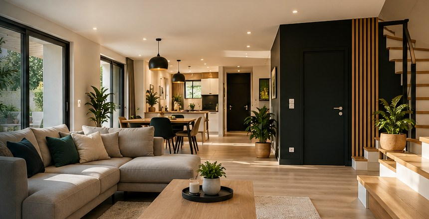
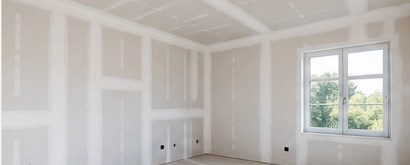
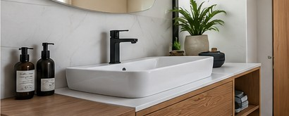

01 / FINITIONS

Peinture
Rafraîchissement des espaces, finitions intérieures et rénovation décorative.
Des petits travaux aux projets de rénovation : une vitrine imaginée pour mettre en lumière les prestations de MNK Renov à Salles.

Rafraîchissement des espaces, finitions intérieures et rénovation décorative.

Cloisons et travaux de plâtrerie pour repenser les volumes.

Interventions de plomberie dans le cadre des travaux du bâtiment.
Cette maquette illustre une présentation possible de MNK Renov. Les textes et photographies d'ambiance générées par IA sont des propositions de WebÉclat. Elles ne représentent pas des chantiers réalisés par l'entreprise et ne constituent pas des engagements vérifiés.
Pour contacter MNK Renov, entreprise référencée à Salles :
06 56 74 69 71 · mnkrenov@gmail.com
Écrire à MNK Renov ↗